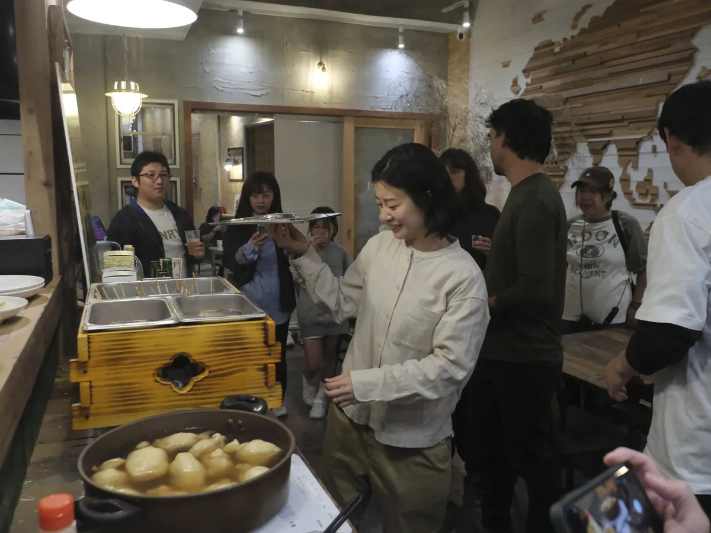

毎月22日は、作戦会議。
フーフーの日（22日）に集まって、讃岐おでんのこれからをみんなで考えます。
新メニューのアイデア、運営の改善、次の展開。おでんを囲みながら、自由に語り合う日です。

- 日時
- 毎月22日
- 場所
- コトリ コワーキング＆ホステル 琴平
- 参加費
- 2,000円（おでん・ドリンク付き）
- 申込み
- Peatixで事前申込み（当日参加もOK）
「ちょっと気になる」くらいの気持ちで大丈夫。
初めての方も歓迎です。

香川の「うどん屋さんにおでんがある」文化をルーツに、琴平で生まれた新しいご当地おでん。2025年7月のキックオフから毎月試作を重ね、プレオープンを経て、今は毎月の固定営業へ。
「プロジェクトから、文化へ。」――讃岐おでんの挑戦は続いています。
讃岐おでんの歩みを見るフーフーの日（22日）に集まって、讃岐おでんのこれからをみんなで考えます。
新メニューのアイデア、運営の改善、次の展開。おでんを囲みながら、自由に語り合う日です。
「ちょっと気になる」くらいの気持ちで大丈夫。
初めての方も歓迎です。
讃岐おでんは「みんなで運営するおでん屋」。食べに来るだけでもOK。もっと関わりたくなったら、いつでも仲間に。
お客さんとして来店。まずはここから！
毎月22日、みんなで未来を考える日
仕込み・接客・メニュー開発・SNS発信
運営の中核として一緒に推進する